F00 project summary card
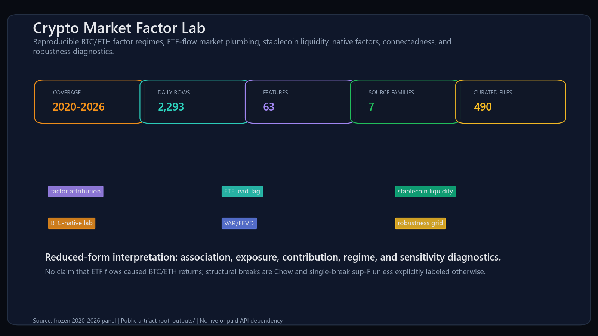
F01 data coverage
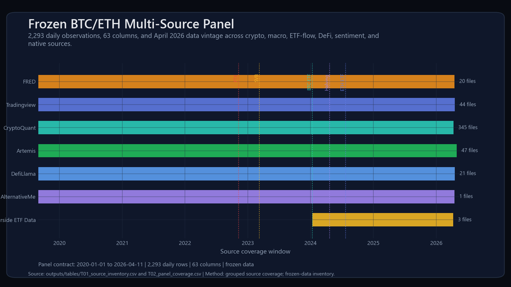
F02 btc block attribution
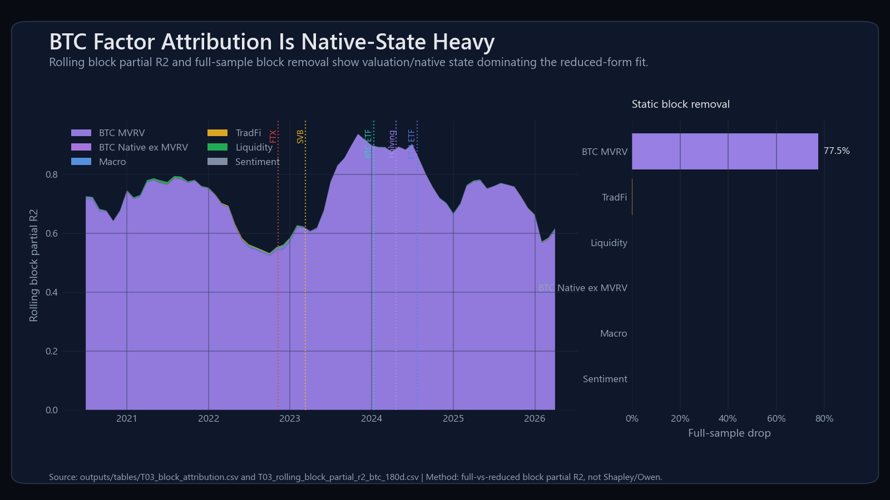
F03 btc etf lead lag
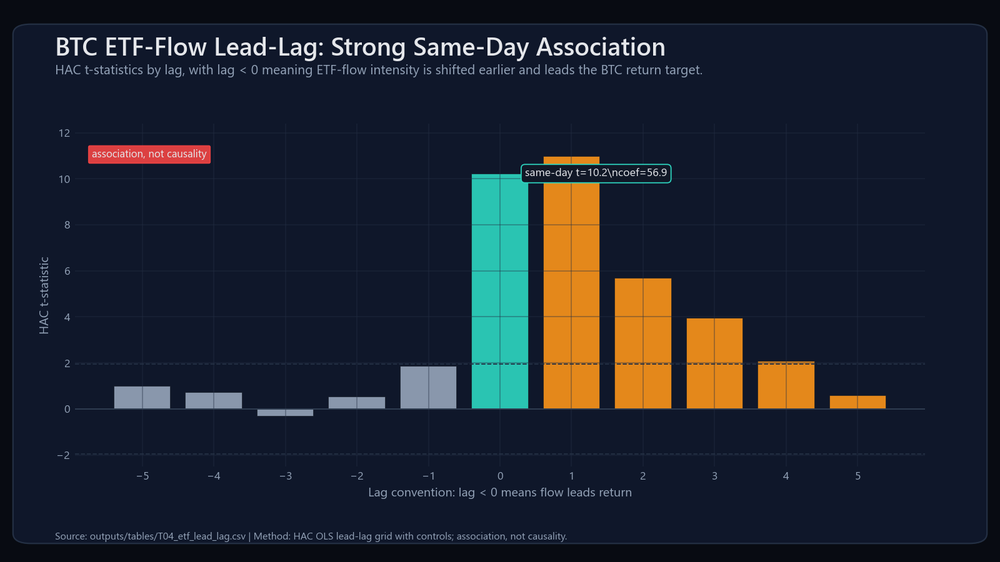
F04 btc rolling correlations
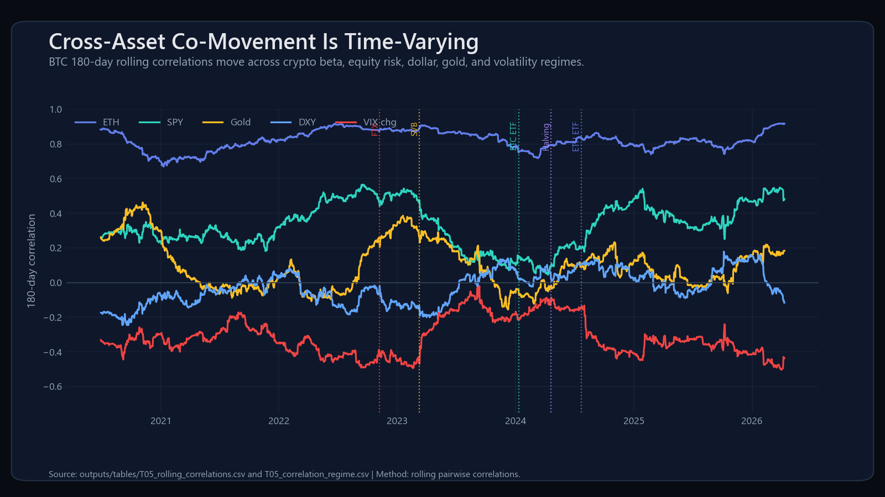
F05 stablecoin supply tvl
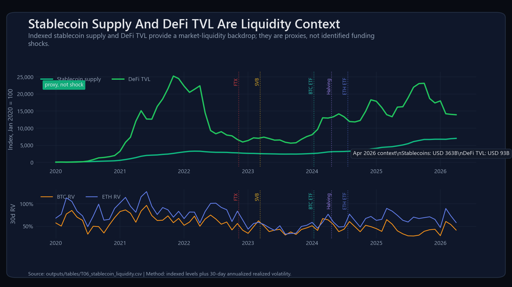
F06 btc native dashboard
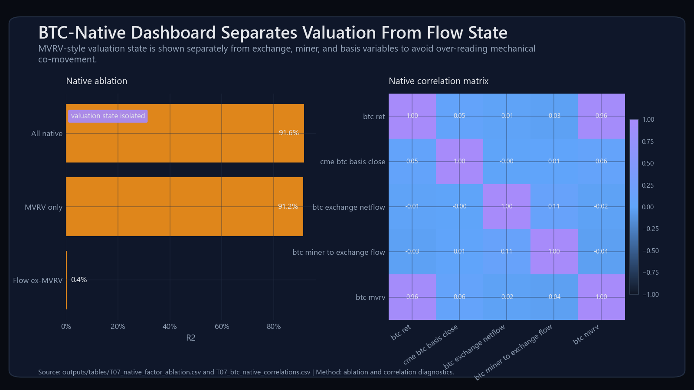
F07 connectedness
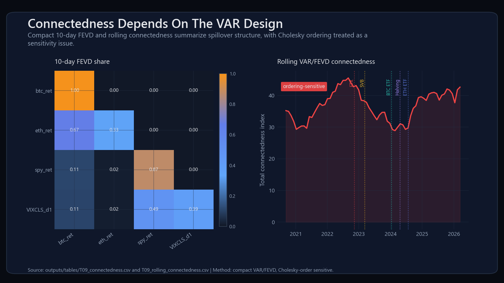
F08 robustness grid
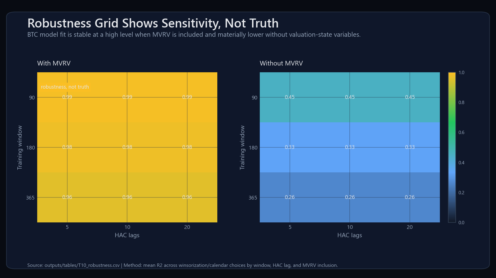
F09 key results cards
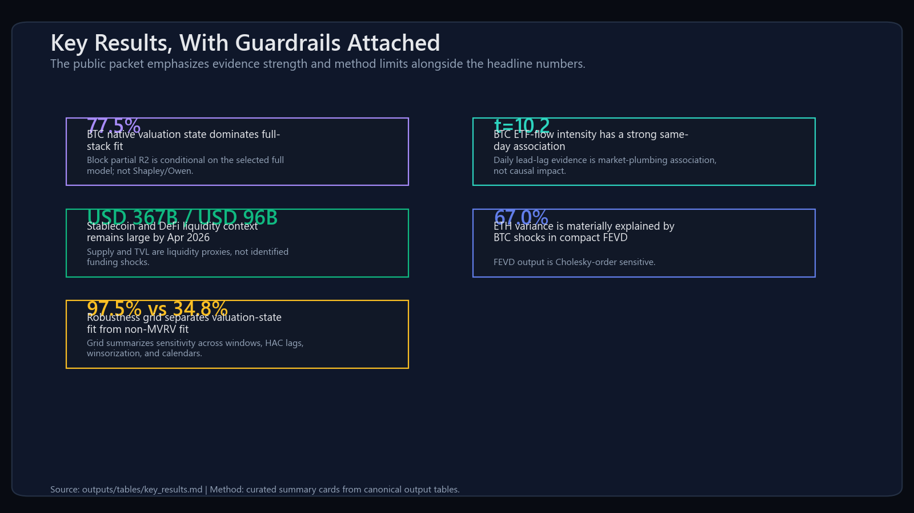
T00 key results table
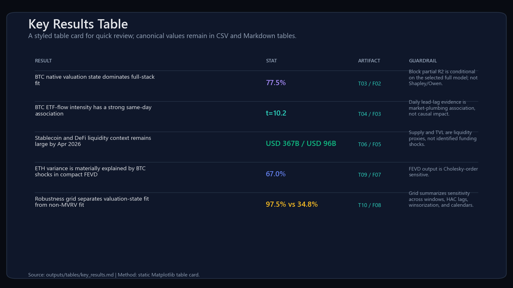